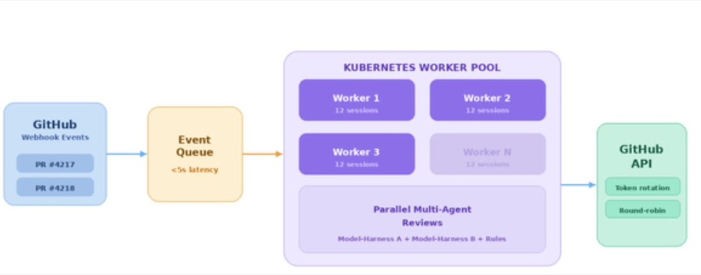
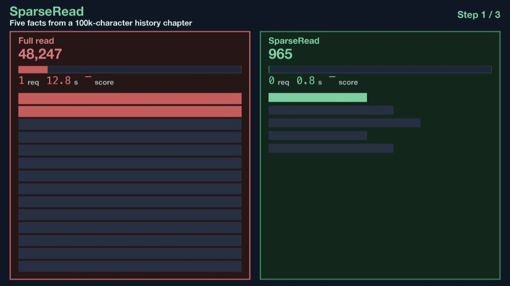

本期速览
02 Agent工具返回先校验schema
03 LinkedIn AI代码审查架构公开
05 SparseRead按需控Token读取
01｜aipath 推出零公式 AI 入门课
来源（X） · @Ryrenz · 2026-11-13 20:09
aipath 是中英双语的 AI 通识课，从“机器怎么学习”一路讲到 RAG、Function Calling 和 Agent，每节课都配了交互演示。
以前零基础想搞懂 AI，常见的路是：翻开一本教材，没几页就是满屏的矩阵和求导，看到梯度下降就合上了；或者刷一堆短视频，名词记住不少，原理还是一团雾。
aipath 把内容分成六个阶段：直觉、原理、大模型、应用、前沿、实践。每节课都是同一个结构：先讲核心概念，再用可视化演示让你看着它动起来，然后点出常见误区，最后留一个小练习。到最后一个阶段，会带你调 API、用 Ollama 在本地部署模型、做一次 RAG 实战。
正文、演示和测验都有中英两版，页面上一键切换。有个细节挺有意思：README 里写着，课程内容、文案、交互演示和前端代码都是 Claude Fable 生成的。
用 AI 做出来的 AI 课，拿来入门正合适。
GitHub：https://github.com/buynao/aipath
02｜Agent工具返回先校验schema
来源（X） · @Rk1ngggg · 2026-11-13 19:47
Agent 接外部工具时，真正危险的失败经常不是报错，而是静默半截成功：HTTP 状态正常，JSON 也能解析，但关键字段缺失、类型不对、枚举值越界、时间戳为空，或者业务状态码和传输状态码互相矛盾。模型一旦把这些残缺结果当成事实继续规划，后面每一步都在给第一步补漏。
更稳的边界是把工具当合同来管。调用成功后先过 schema 闸门，检查必填字段、类型、枚举范围、默认值和状态码组合；缺字段就直接 fail fast，按策略重取、降级到本地兜底、转人工确认，或者把任务标记为不可继续。
提示词提醒只能降低概率，不能替代返回结构校验。LLM 擅长补全模式，不擅长识别“看起来完整但实际残缺”的数据。把校验放在模型规划前，失败成本才可控。
03｜LinkedIn AI代码审查架构公开
来源（X） · @mylifcc · 2026-11-13 17:02
AI 写代码快到飞起，人类审代码审到崩溃。
LinkedIn 刚公开了他们内部 AI Code Review 系统的完整架构，每周在 1 万多个代码库里狂审 7.9 万条评论，真实代码采纳率高达 63.9%（并发 Bug 采纳率 100%）。
他们踩过所有商业 AI 审代码工具的坑，最后总结出一套反常识的解法👇

04｜Opus 5.5 适合作日常主力模型
来源（X） · @Xudong07452910 · 2026-11-13 17:44
Blog里有几个挺实用的技巧，推荐大家试试。
1. 默认使用 Medium effort，效果不够再调高，没必要每次都拉满推理强度。
2. 直接说明任务目标、最终交付物和需要人工确认的地方，少写繁琐的逐步指令。
3. 要文档、表格或 PPT，就直接让 Claude 生成成品，别总是先让它写大纲。
4. 遇到图表、截图和复杂文档，直接上传原始材料，让 Claude 自己读取和分析。
还有个值得留意的观点，虽然 Opus 的 Token 单价更高，但如果能减少执行步骤和返工，完成整个任务的成本反而可能更低。
原文：https://claude.com/resources/articles/using-claude-opus-5-5-as-your-daily-driver-for-knowledge-work
05｜SparseRead按需控Token读取
来源（X） · @aigclink · 2026-11-13 10:05
你让Claude Code排查一个Bug，一个项目有几百个文件几十万行代码，真正有用的可能只有几十行
但是Agent为了找到几十行有效信息，可能会先消耗几万个甚至几十万个Token，最后Token消耗越来越多，运行越来越慢，成本越来越高
SparseRead给出的核心思路是，不读完再压缩，在读取之前就决定哪些内容值得进入模型上下文
具体做法是：
首先，明确阅读意图，Agent先确定当前任务需要什么信息，哪些证据已经找到，哪些还缺失，不要不加区分的读取所有内容
第二按需定位证据，针对代码、长文档、表格等不同资料，采用相应的搜索、定位和局部读取方式
比如排查登录Bug，就优先定位相关代码和报错日志，而不是说先把整个仓库读一遍
第三控制阅读预算，在外部内容进入上下文之前控制读取量，如果现有信息不足，可以继续扩大搜索范围，必要时也能退回完整读取
它最有价值的地方是，做成了Agent Harness中的一套阅读控制机制，不只是说增加一个搜索工具
与其把大量资料塞进上下文后再压缩，不如先判断这些资料到底有没有必要被读进去，尤其对长程Agent来说，有参考价值
#SparseRead #Agent上下文 #AgentHarness
